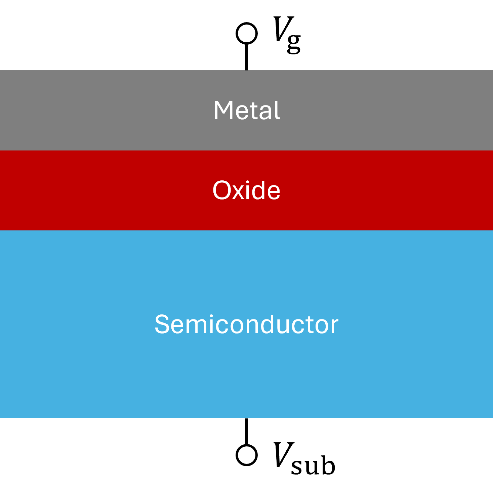
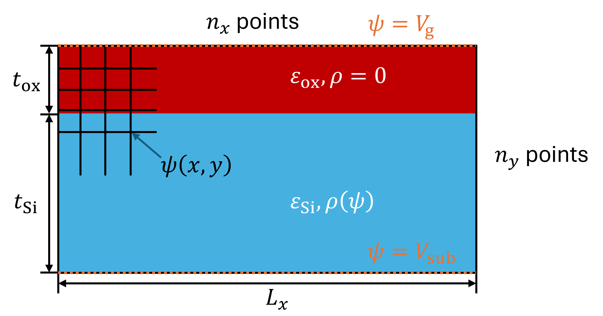

MOS (Metal-Oxide-Semiconductor) is an important structure in the field of semiconductors. The problem is to calculate electrostatic potential of this structure.

The simulation condition is shown above.
The basic poisson equation of electrostatics should be true in all points, where is electrostatic potential (voltage), is charge density and is permittivity.
There is no free charge in oxide: in oxide.
In semiconductor, the charge density depends on the potential: where and are thermal equilibrium concentration of electron and hole, and are doner and acceptor concentration and is thermal voltage.
This algorithm updates until convergence.
for (iter = 1; iter <= max_iters; ++iter) {
for (sweep = 0; sweep < inner_jacobi; ++sweep) {
update_psi();
}
if (converged) break;
}I actually have no idea why there are double loops.
Inside update_psi()
for (j = 1; j < ny - 1; ++j) {
for (i = 1; i < nx - 1; ++i) {
rho = calculate_rho_from_psi();
g = calculate_residual(rho);
psi_new[j][i] = calculate_update_amount(psi[j][i], g);
}
}
copy_psi_new_to_psi();Residual is an error of the poisson equation, which should be zero ideally. We can calculate how much to update by using and .
I manually added comments for better understanding and TODOs.